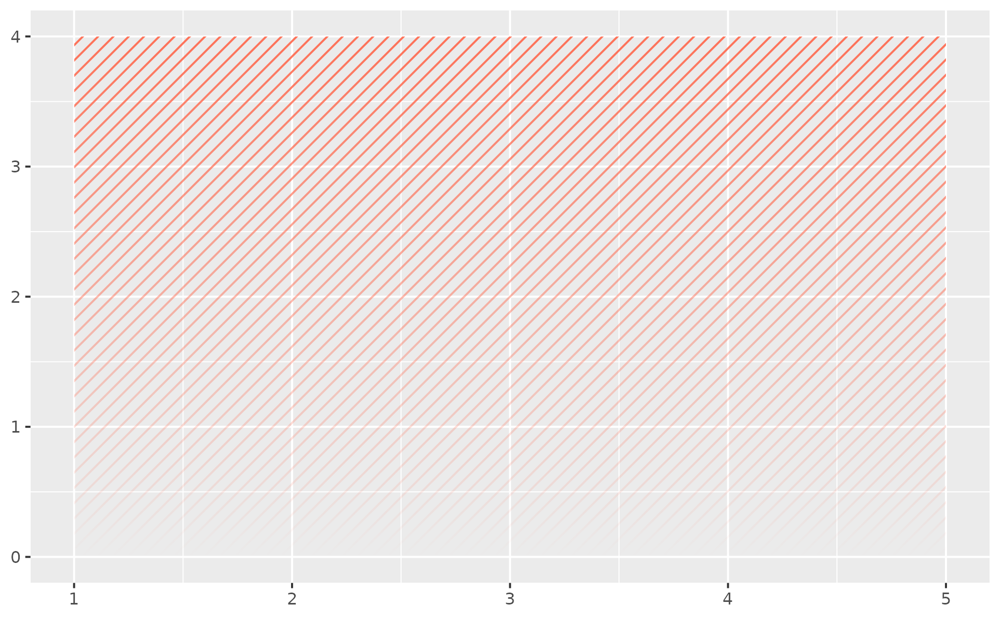
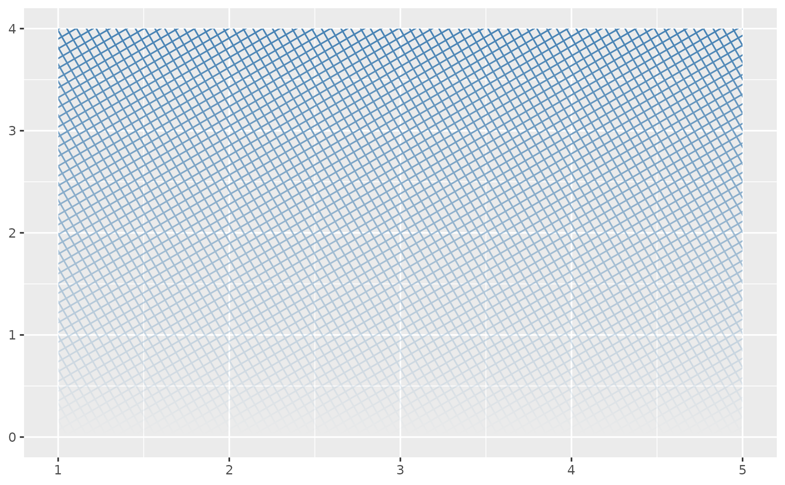
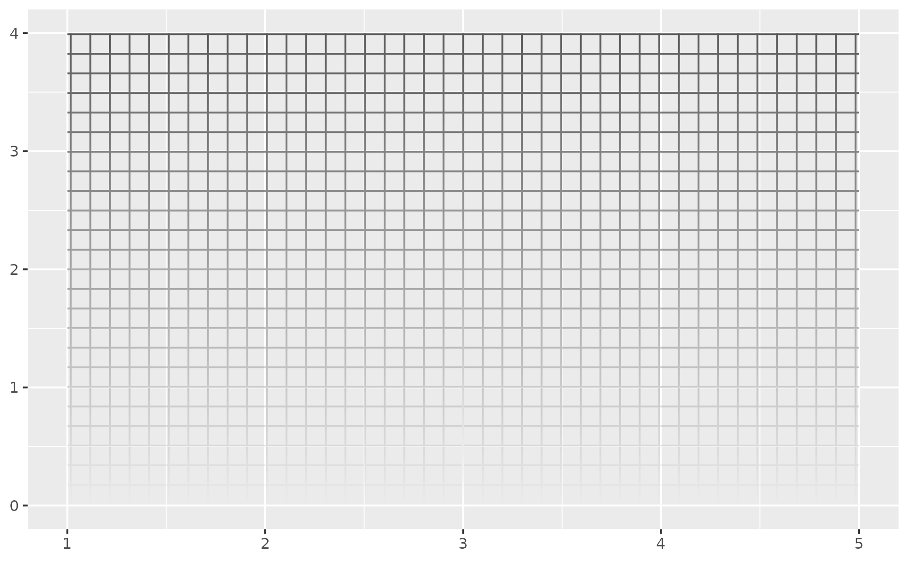

hatch() builds a line-hatch specification to pass to the pattern argument
of geom_rect_fade(). The lines are drawn at a true visual angle, clipped to
each rectangle, and faded along with the alpha gradient. A single helper
covers the common CAD-style fills:
- diagonal stripe
hatch()(the default, 45 degrees)- diagonal crosshatch
hatch(style = "crossed")- vertical stripe
hatch(90)- horizontal stripe
hatch(0)- square grid
hatch(0, style = "crossed")
Arguments
- angle
Line angle in degrees (default
45).- style
"parallel"(default) draws a single family of parallel lines;"crossed"overlays a second family atangle + 90(a crosshatch when diagonal, a grid when axis-aligned).- spacing
Distance between adjacent lines, as a
grid::unit()(defaultunit(2, "mm")). A bare number is treated as millimetres.
Value
A ggpointless_pattern object to pass to the pattern argument of
geom_rect_fade().
Details
Line spacing is a physical distance (millimetres), so it stays constant when the plot is resized rather than scaling with the panel.
Hatch line colour always follows the fill aesthetic – a fixed colour
independent of the fill would break the mapping. Line weight and dash
pattern are fixed at sensible defaults (linewidth = 0.5, solid lines)
and are not exposed as parameters for the same reason.
The hatch transparency is owned by the fade (alpha / alpha_fade_to on
the geom), so hatch() has no alpha argument.
Examples
library(ggplot2)
df <- data.frame(xmin = 1, xmax = 5, ymin = 0, ymax = 4)
base <- ggplot(df) +
aes(xmin = xmin, xmax = xmax, ymin = ymin, ymax = ymax)
# Diagonal stripe (default), faded toward the baseline
base + geom_rect_fade(fill = "tomato", alpha = 0.9, pattern = hatch())

# Crosshatch at a custom angle
base + geom_rect_fade(
fill = "steelblue", pattern = hatch(30, style = "crossed")
)

# Square grid with wider spacing
base + geom_rect_fade(
pattern = hatch(0, style = "crossed", spacing = unit(4, "mm"))
)
